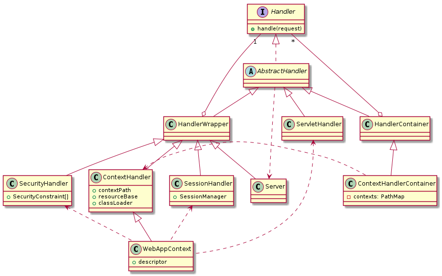

工具推荐：PlantUML，文本转UML图工具
为什么要用文本生成UML，而不直接画UML？
这就好像问为什么要用markdown，而不直接使用.odt或者.docx格式。答案一样：
这属于强迫症，得治。
安装
如果使用ubuntu，直接：
sudo apt-get install graphviz plantuml
其它平台或者安装方法请参考官网
使用
plantuml src.txt
如果是下载的jar：
java -jar plantuml.jar src.txt
会在当前目录下生成src.png
示例
输入：
jetty-handler.pu
@startuml
interface Handler {
+handle(request)
}
abstract class AbstractHandler
class HandlerWrapper
class ServletHandler
class HandlerContainer
class Server
class SessionHandler {
+SessionManager
}
class SecurityHandler {
+SecurityConstraint[]
}
class ContextHandler {
+contextPath
+resourceBase
+classLoader
}
class ContextHandlerContainer {
-contexts: PathMap
}
class WebAppContext {
+descriptor
}
Handler <|.. AbstractHandler
Handler "1" --o HandlerWrapper
Handler "*" --o HandlerContainer
AbstractHandler <|-- HandlerWrapper
AbstractHandler <|-- ServletHandler
AbstractHandler <|-- HandlerContainer
AbstractHandler ..> Server
HandlerWrapper <|-- Server
HandlerWrapper <|-- SessionHandler
HandlerWrapper <|-- SecurityHandler
HandlerWrapper <|-- ContextHandler
ServletHandler <.. WebAppContext
HandlerContainer <|-- ContextHandlerContainer
SessionHandler <.. WebAppContext
SecurityHandler <.. WebAppContext
ContextHandler <. ContextHandlerContainer
ContextHandler <|-- WebAppContext
@enduml
输出：
jetty-handler.png
